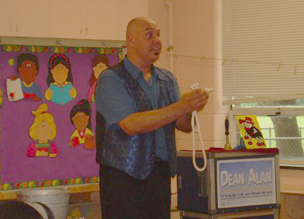
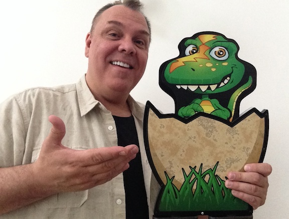
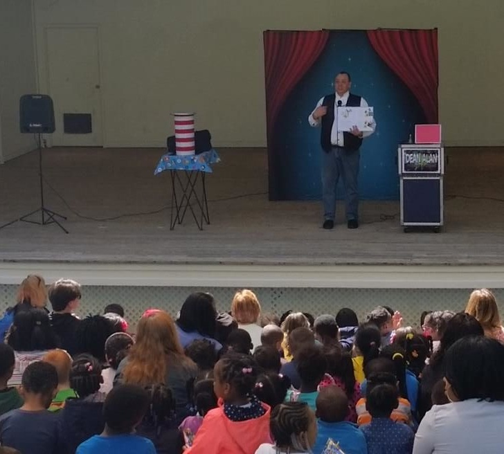
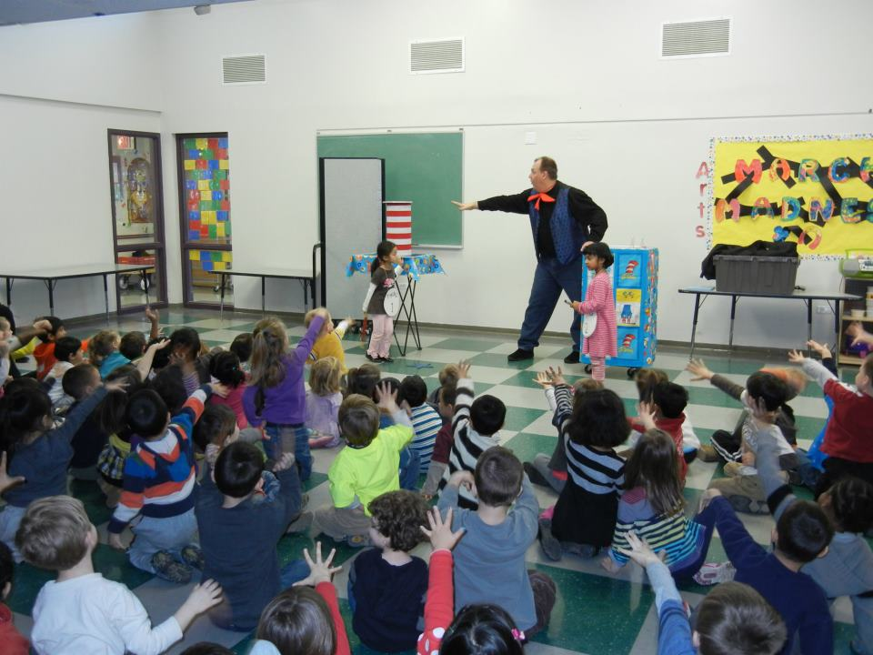

Daycare magician
Daycare Magician, The Most Popular In Northern Virginia! For 20 Years, Dean Alan Has Delivered The Best Magic Shows For Daycares!
Welcome to the Daycare Magic Shows of Dean Alan.

Dean Alan is THE BUSIEST Daycare Magician in the Northern VA. He specializes in making young children laugh and learn at the same time! Two decades of experience has taught him how you can make any ordinary thing magical, when you know how to speak the language of young children! That’s why THOUSANDS of preschool aged kids in the D.C. area love Dean Alan the Magician!

Dean offers a wide range of shows, from educational shows to programs that are simply for fun. In fact, ALL the shows are filled with fun routines to make kids giggle and laugh.


If you’re booking for a daycare you want several things: Experience, Reliability, Dependability, Value, and you want a good show. You can expect all that and more from the best Daycare Magician, Dean Alan!
Simply click here To Find Out More About Dean Alan And His Shows!!!
And if you’re really adventurous, go check out my blog




